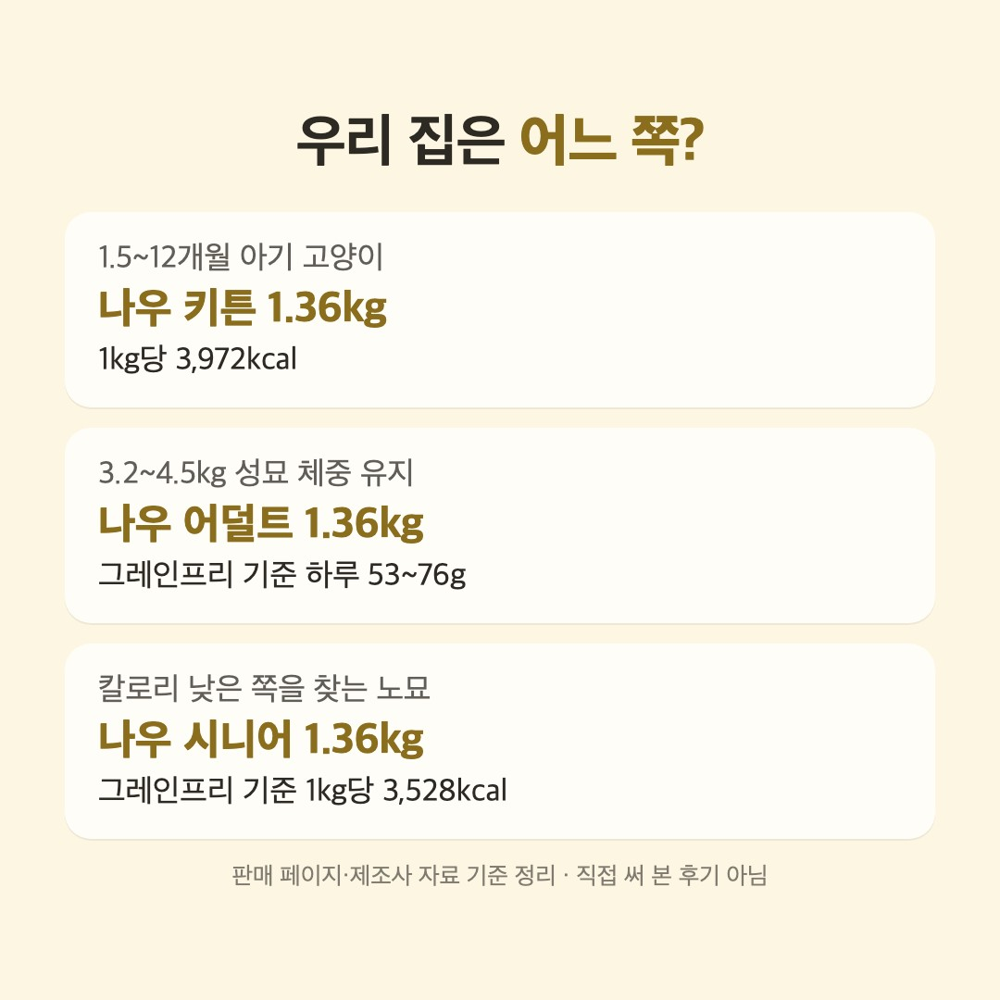

이 포스팅은 네이버 쇼핑 커넥트 활동의 일환으로, 판매 발생 시 수수료를 제공받습니다.
이 페이지는 쿠팡 파트너스 활동의 일환으로, 이에 따른 일정액의 수수료를 제공받습니다.
직접 써 본 후기가 아니라 판매 페이지의 사양표와 제조사 표기를 읽고 정리한 비교예요.
나우고양이사료, 4kg 성묘는 하루 53~76g
결론부터
- 1.5~12개월 아기 고양이가 있는 집이면 나우 캣 프레쉬 그레인프리 키튼 1.36kg(쿠팡 31,000원)이에요. 공식 급여표가 1.5~12개월을 나이·체중별로 나눠 둔 건 키튼뿐이에요.
- 다 큰 고양이 체중을 그대로 유지하려는 집이면 나우 캣 프레쉬 어덜트 1.36kg(네이버 쇼핑 26,400원)이에요. 봉지가 그레인프리 칠면조·연어·오리라면 3.2~4.5kg 공식 유지량이 하루 53~76g이에요.
- 나이 든 고양이에게 칼로리가 낮은 쪽을 찾는 집이면 나우 캣 프레쉬 시니어 1.36kg(네이버 쇼핑 26,400원)이에요. 그레인프리 시니어라면 1kg당 3,528kcal로 셋 중 가장 낮고, 시작 나이는 공식 표기가 없어요.
📅 가격은 11월 9일 확인값이에요. 지금 가격은 버튼에서 확인하세요.

블로그에서 자세한 비교 읽기다른 비교
이 포스팅은 토스쇼핑 쉐어링크 활동의 일환으로, 이에 따른 일정액의 수수료를 제공받습니다.
💸 토스에서 사는 생필품 보기사기 전 노트 블로그의 다른 비교 글